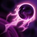

VOID STONE
Kassadin takes reduced magic damage and ignores unit collision.
NULL SPHERE
Kassadin fires an orb of void energy at a target, dealing damage and interrupting channels.
The excess energy forms around himself, granting a temporary shield that absorbs magic damage.
NETHER BLADE
Passive: Kassadin's basic attacks deal bonus magic damage.
Active: Kassadin's next basic attack deals significant bonus magic damage and restores Mana.
FORCE PULSE
Kassadin draws energy from spells cast in his vicinity.
Upon charging up, Kassadin can use Force Pulse to damage and slow enemies in a cone in front of him.
RIFTWALK
Kassadin teleports to a nearby location dealing damage to nearby enemy units.
Multiple Riftwalks in a short period of time cost additional Mana but also deal additional damage.